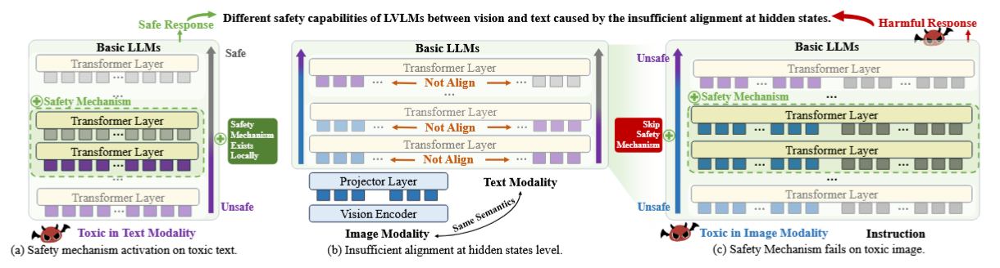

Literature Review: Cross-Modal Safety Mechanism Transfer in LVLMs (TGA)
This paper argues that today’s vision–language alignment procedures do not transfer a base LLM’s text-mode safety behaviors to the vision modality. The authors localize where refusals are triggered inside LVLMs, show that image tokens are misaligned with the corresponding text at precisely those “safety-activation” layers, and propose Text-Guided Alignment (TGA), which retrieves a text template and trains the projector so that image-side hidden states align with text-side hidden states layer-wise. Empirically, TGA raises defense success rate (DSR) against toxic images across seven scenes without any vision-side safety finetuning, while preserving general VLM utility.

Figure: Concept. Safety is triggered at specific layers using information carried by toxic tokens. Existing alignment leaves image hidden states misaligned at those layers, so the mechanism fails on images. TGA pulls image states toward text states with a retrieval-guided, layer-wise loss.
Key Insights
-
Safety “lives” in specific layers and is detected via refusal semantics.
The paper locates “safety-activation” layers by scanning per-layer next-token distributions and finding where “sorry/apology” tokens jump to top-rank change. They compute per-layer logits with the shared LM head and detects the first layer whose distributional delta makes “sorry” tokens top-1. -
Hidden-state misalignment explains cross-modal failure.
At the very layers where refusals emerge for toxic text, the cosine similarity between image and text hidden states with matched semantics is lower than expected (below CLIP-level semantic similarity), indicating insufficient alignment at the critical internal representation level. -
Text-Guided Alignment (TGA).
TGA retrieves a semantically related text (BEIT-3 index over ~1.158M captions + 5K toxic snippets) and trains with a pair-wise, layer-wise loss so that image states (Ij) move closer to caption states (C_j) than to retrieval states (R_j): ( \mathcal{L}{\text{guide}} = \sum_j -\cos(I_j,C_j) + \log(1+\exp[-(\cos(I_j,C_j)-\cos(R_j,C_j))]) ), combined with standard LM cross-entropy.
Ratings
Novelty: 4/5 Cross-modal mechanism transfer framed around layer-wise hidden-state alignment is a clear, useful angle; the retrieval-guided loss is sensible but incremental relative to existing alignment/contrastive objectives.
Clarity: 3/5 Core story is readable and figures help, but the detection of safety activation via “sorry/apology” tokens relies a brittle assumption and deserves a more careful treatment and ablation.
Personal Comments
The localization procedure depends on a prompt that asks the model to refuse in a specific phrasing, then uses the per-layer surge of “sorry” tokens to mark safety activation. The question is whether the mechanism would be found, and whether TGA would still work, if refusals can pop up without the string “sorry” (i.e. “I can’t help with that”, policy citation, multilingual refusals). This risks pigeonholing both the detection and the learned behavior into one lexical template. A stricter test would repeat all analyses with a family of refusal types and a lexical-free refusal detector (i.e. a small trained refusal classifier on hidden states, or policy-key probes), then report sensitivity on that.
Enjoy Reading This Article?
Here are some more articles you might like to read next: